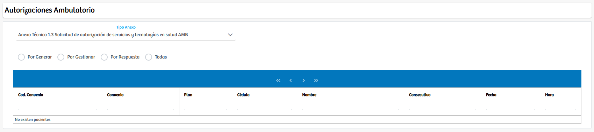

Modulos Sas-Web
Funcionalidades
Ambulatorio
El módulo Ambulatorio permite gestionar los anexos técnicos asociados a solicitudes de autorización de servicios y tecnologías en salud dentro del ámbito ambulatorio. Al ingresar, el sistema presenta un selector destinado a elegir el Tipo de Anexo, el cual define el formato técnico sobre el que se realizará la interacción. Una vez seleccionado el anexo correspondiente, la plataforma habilita diferentes filtros operativos mediante cuatro opciones: Por generar, Por gestionar, Por respuesta y Todas. Estos filtros permiten al usuario visualizar únicamente los registros que se encuentran en la etapa del proceso que desea atender, organizando la información según el estado actual del trámite.
La vista principal muestra una tabla donde se presentan los registros coincidentes con el tipo de anexo seleccionado y el filtro aplicado. Allí se observan datos como convenio, plan, identificación del usuario, nombre, consecutivo del anexo, fecha y hora. Cuando existen registros disponibles, el usuario puede iniciar el proceso de generación del anexo, continuar con la gestión del mismo o revisar las respuestas recibidas, dependiendo de la etapa en la que se encuentre cada solicitud. El sistema está diseñado para facilitar la trazabilidad del proceso ambulatorio y garantizar que cada anexo técnico pueda ser gestionado de manera oportuna y organizada, permitiendo al usuario navegar entre estados y atender cada caso según su prioridad.
Gracias a esta estructura, el módulo consolida en un solo espacio la creación, seguimiento y control de los anexos técnicos ambulatorios, ofreciendo una experiencia ágil y clara para quienes realizan procesos de autorización en servicios de salud.